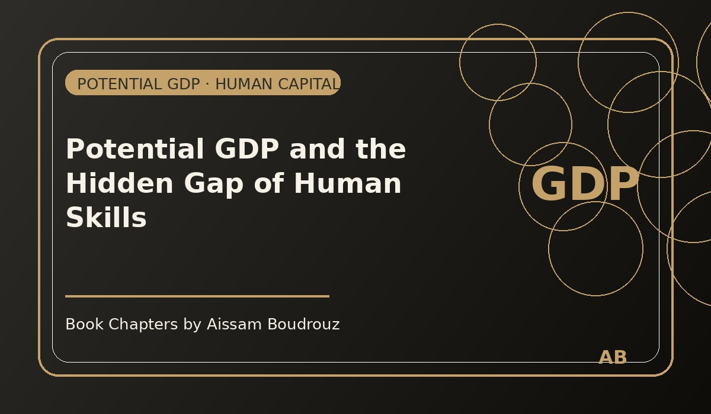

Potential GDP and the Hidden Gap of Human Skills
I've always been fascinated by the idea of what could have been — not just in life, but in economics too. We often measure what a country does produce. But what about what it could have produced?
That question is at the heart of one of modern economics' most subtle concepts: potential GDP.
The idea of what we could achieve
Gross Domestic Product, or GDP, is simple in theory. It measures everything we produce — through recorded output, income, or spending. But back in the 1960s, economist Arthur Okun suggested that we should also think about something else:
the level of production we could reach if we used all our productive capacities.
He called it potential GDP — the invisible ceiling of what an economy can truly achieve when every machine, every worker, and every skill is fully used.
The gap between what we actually produce and what we could produce is called the output gap. A small gap means we're close to our potential. A large one means resources — workers, capital, time — are being left idle.
When theory guides policy
Today, central banks and governments rely heavily on this measure. When they detect under-utilized capacity, they lower interest rates or inject liquidity to stimulate investment. When the economy overheats, they do the opposite.
The logic seems clean, almost mathematical. Potential GDP is usually estimated through the Cobb–Douglas production function:
Where K = capital, L = labor, A = total factor productivity, and α measures labor's elasticity in output.
It's neat, elegant, and terribly incomplete.
The missing factor
Because there's something this formula forgets to ask: what kind of labor are we measuring?
Economics treats all workers as if they were perfectly matched to their roles — as if a master's graduate and a high-school graduate contribute equally when they share the same job.
But real life tells another story.
Many workers today are not unemployed — they're under-employed. They work full time, but in jobs far below their level of training or potential. They are counted as employed in the statistics, yet their true contribution — their real capacity — is partially unused.
This is what I call employment with under-exploited skills (emplois avec sous-exploitation des compétences).
The invisible output gap
If the goal of potential GDP is to estimate what we could produce by fully using all our factors of production, shouldn't we also consider this waste of talent as part of the unused capacity?
Because when a highly trained engineer works as a cashier, or a statistician drives for a delivery app, there is an invisible loss of productivity — a hidden output gap that no model measures.
What if we could quantify that? How much potential output are we losing simply because we misallocate human skills?
Perhaps the true output gap is larger than we think — not just in terms of machines sitting idle, but minds underused.
Beyond numbers
Arthur Okun's idea was about the economy's physical limits. Maybe the next generation of economists will extend it to its human limits — the skills, creativity, and intelligence we fail to mobilize.
Because the potential of a nation isn't only in its factories or capital stock — it's in the match between what people can do and what they actually do.
And until we learn how to measure that, our GDP will remain incomplete — a picture of productivity that hides half of its color. 💡📊
← Back to Articles